Chapter 9 Pearson’s \(\chi^2\) Test
The \(\chi^2\) (“chi”-squared, pronounced like the last syllable of sky) test allows us to assess if observed differences in the behavior of categorical data is explained by random chance or represents a meaningful pattern. This method was developed by Karl Pearson and introduced in 1900 - it is a foundational method in modern statistics.
9.1 Expectations v. Observations
Given two categorical variables \(X\) and \(Y\), it often of interest to ask if these two variables are associated with one another. However, categorical data can be challenging to work with because we cannot map the values of categorical data onto some distribution. The \(\chi^2\) test was developed to give us a way to map observed patterns in the data between categorical variables onto a theoretical distribution, thus allowing us to conduct a signifance test.
The goal with the \(\chi^2\) Test of Independence is to determine if \(X\) and \(Y\) are related to one another (i.e., if they are dependent on one another)? For example, we might want to know if income level (measured categorically) is related to current smoking status. Since both variables are categorical, we do not have a good way of mapping the behavior of either variable on to a theoretical distribution.
But, we can define how we expect the distribution of values of \(X\) and \(Y\) within our sample to be if they are not related to one another (i.e., if they are independent of one another). Let’s use an example to display how we can define the expected behavior of two categorical variables if we assume they are independent of one another.
9.1.1 Income Level and Smoking Status
Let’s say we have recruited 400 people into a study examining the relationship of income and smoking status. We have measured annual income categorically (<$20k, $20-50k, >$50k) and smoking status categorically (not a current smoker, current smoker). Looking at the sample, we see that 100 people reported an income <$20k, 200 people reported an income $20-50k, and 100 people reported an income >$50k. Further, we see that 100 people reported currently smoking and the other 300 reported not currently smoking. We can start by generating a cross-tabulation we will use as a framework to build our analysis on, like so:
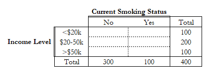
The total row and column display the total number of people that fall into each category. The total value in the bottom right thus displays the total number of people in our study. Within the dotted lines represents the number of people who reported each combination of income and smoking. For example, the empty cell in the top left corner represents the number of people who reported an annual income below $20k and who reported not currently smoking.
Before we examine the observed disitribution of our data, we can actually map how we expect the variables to be distributed assuming that income and cigarette smoking are not related. Well, if we assume that these two variables are independent (hint: sounds like a null hypothesis), then we would expect the values of both variables would be evenly distributed across both groups. We are able to calculate the expected value in each cell using the equation, \(\frac{n_{row}*n_{column}}{n}\), where \(n_{row}\) is the total number of participants in that given row, \(n_{column}\) is the total number in that given column, and \(n\) is the total number of participants. Let’s calculate the top-left cell below:
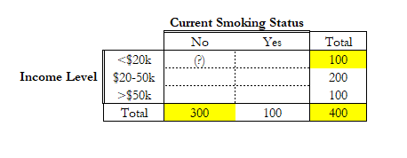
Here we can see that \(n_{row} = 100\), \(n_{column} = 300\), and \(n = 400\). Thus, the expected number of people reporting income less than $20k who don’t currently smoke is: \(\frac{300*100}{400} = 75\). We will place the expected value in parentheses in the cell like so:
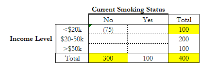
We can repeat this process for each cell, resulting in the following table of expected values:
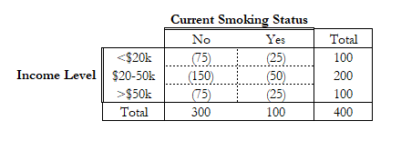
Here, we are assuming that the distribution of income is the same among people who don’t currently smoke and those who currently do. Likewise, under our assumption, we are expecting that distribution of current smoking to be the same across each income level (in this case, 75% not current smoking and 25% current smoking).
This represents the expected distribution of our two variables under the assumption that they are independent. Once we have established expected values, we can fill in the actual observed values within our sample. The following table now includes the values (not in parentheses) of what we observed in our sample:
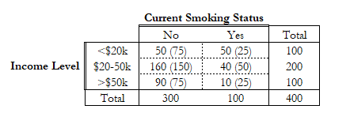
We can see, right away, that our observations differ from our expected values. We can see that a greater proportion of people making less than $20k currently smoke than expected and a smaller proportion of those making more than $50k than expected. We need a way to quantify this difference.
The difference between our expected values \(E_{row,column}\) and observed values \(O_{row,column}\) within each cell can be understood to represent our signal. This difference represents how different our observed data is from what we expected under our assumption that the two variables are independent. We could try to sum up all of these differences, like so:
\[\sum{(O_{row,column} - E_{row,column})}\]
This would be the sum of the difference between the expected and observed value in each cell. Interestingly though, this will always equal 0, so it is not a very useful metric. Let’s do the calculation by hand to display that it equals 0, for our example table above:
\[ \begin{align} & (50 - 75) + (50 - 25) + (160 - 150) + (40 - 50) + (90 - 75) + (10 - 25)\\ = &-25 + 25 + 10 + (-10) + 15 + (-15)\\ = &0 + 0 + 0\\ = &0 \end{align} \] This is a similar issue we face when we try to calculate standard deviation \(s\) for a normally distributed variable and why we have to calculate the variance \(s^2\) first. Importantly, if you take the square of any value (positive or negative), the result will be positive. So if you take the sum of several squares, your result will only be 0 if your data perfectly matches your expected values. We can define this new sum like so:
\[\sum{(O_{row,column} - E_{row,column})^2}\]
Now, when we take this sum, we get a meaningful value, like so:
\[ \begin{align} & (50 - 75)^2 + (50 - 25)^2 + (160 - 150)^2 + (40 - 50)^2 + (90 - 75)^2 + (10 - 25)^2\\ = &-25^2 + 25^2 + 10^2+ (-10)^2 + 15^2 + (-15)^2\\ = &625 + 625 + 100 + 100 + 225 + 225\\ = &1900 \end{align} \]
This is much better and still represents the strength of our signal (i.e., difference between observed and expected values)! However, we can notice that the size of this value is also dependent on the size of our study sample. We could have sampled twice as many people with an identical proportional distribution of observed results and the strength of the signal would appear much larger, even though the proportional distribution across groups is the same.
As such, it is important that we take a step to standardize our calculation of the strength of our signal. We do this by dividing the difference between each observed and expected value by the expected value. Now, instead of representing the crude difference between observed and expected values, each term represents the difference between observed and expected values relative to the expected value. We can define this mathematically like so:
\[\chi^2 = \sum{ \frac{(O_{row,column} - E_{row,column})^2}{E_{row,column}}}\]
In this instance, we are able to calculate:
\[ \begin{align} \chi^2 = & \frac{(50 - 75)^2}{75} + \frac{(50 - 25)^2}{25} + \frac{(160 - 150)^2}{150} + \frac{(40 - 50)^2}{50} + \frac{(90 - 75)^2}{75} + \frac{(10 - 25)^2}{25}\\ \chi^2 = &625/75 + 625/25 + 100/150 + 100/50 + 225/75 + 225/25\\ \chi^2 = &48 \end{align} \]
We have now calculated a standardized value representing the strength of our signal under the assumption that no signal exists. It turns out that this value corresponds to a \(\chi^2\) distribution with \((rows - 1)*(columns - 1) = (3-1)*(2-1) = 2*1 = 2\) degrees of freedom. This is very cool, because it allows us to use this metric to assess the probability of our observed data under our assumption that our two variables are not related to one another. But, this should immediately beg the question: what is a \(\chi^2\) distribution?
9.2 The \(\chi^2\) Distribution
Earlier, we learned about how the normal distribution arises from how we understand certain natural phenomenon to randomly occur. A normally distributed variable is one where the mean value is the most likely value to observe, where values closer to the mean are more likely than values further from the mean, and where values less than the mean are equally as likely to occur as those greater than the mean. The standard normal distribution (\(Z\)-distribution) is depicted like so:
## Let's create our x-axis, ranging from -5 to 5, with increments of 0.1
x <- seq(-5, 5, by = .1)
## Let's now define our normal function using the dnorm() function, where the mean value is 0 and the standard deviation is also 1
y_normal <- dnorm(x, mean = 0, sd = 1)
## We will now plot the normally distributed data as a line (type = "l")
plot(x,y_normal, type="l", ylab = "Density")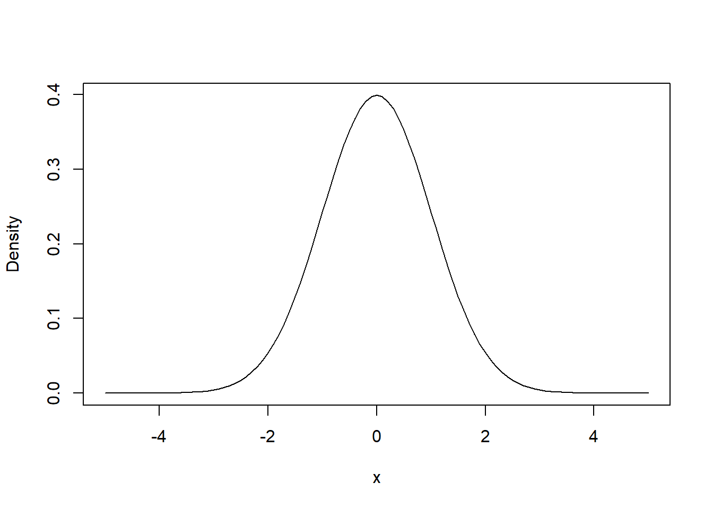
Interestingly, if we square the values of the \(Z\)-distribution, we get the resultant distribution. By squaring the distribution, I mean that we take any point (\(x\),\(y\)) in the \(Z\)-distribution and we map it onto the point (\(x^2\),\(y^2\)):
## Let's create our x-axis, ranging from -5 to 5, with increments of 0.1
x <- seq(0, 5, by = .01)
## Now Let's generate our chi-distribution
chi_y <- dchisq(x,1)
## Now let us plot this
plot(x,chi_y, type="l", ylab = "Density")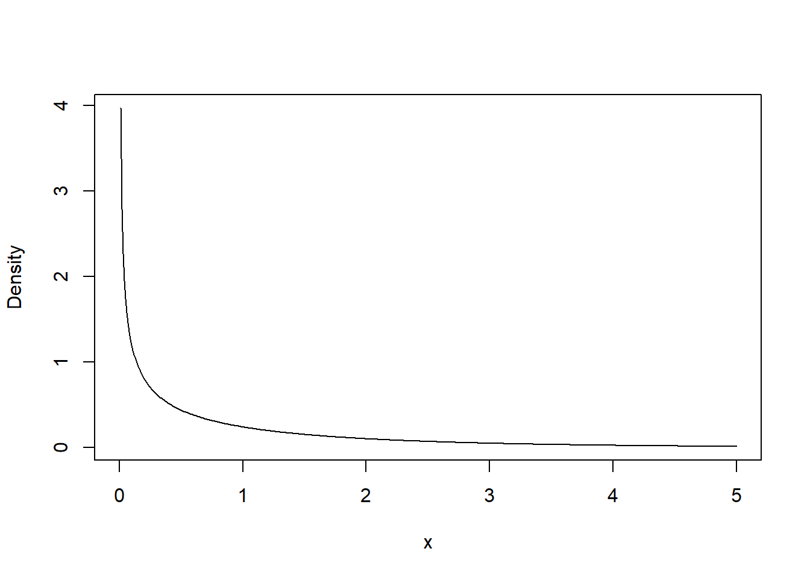
We refer to this distribution as the \(\chi^2\) distribution with 1 degree of freedom, or \(\chi_1^2\). It is less intuitive than the normal distribution, because instead of directly describing a natural phenomenon, it is describing the behavior of a normally distributed variable. We can understand that a random variable can be explained by a \(\chi^2\)-distribution if the variable is constructed from the square of a normally distributed variable.
Let’s examine the distribution more closely. We can see that a value of 0 is the most likely and that values greater than 0 rapidly become much more rare. Since \(\chi_1^2\) is the square of the \(Z\)-distribution, negative values are not possible (squared numbers are always positive).
By definition, ~68% of observations of a variable assumed to follow the \(Z\)-distribution will fall between \(-1\) and \(1\) (i.e., one standard deviation of the mean). We can plot that like so:
## Let's create our x-axis, ranging from -5 to 5, with increments of 0.1
x <- seq(-5, 5, by = .01)
## Let's now define our normal function using the dnorm() function, where the mean value is 0 and the standard deviation is also 1
y_normal <- dnorm(x, mean = 0, sd = 1)
## We will now plot the normally distributed data as a line (type = "l")
plot(x,y_normal, type="l", xlab = "x", ylab = "Density")
## we want all values of x and y where x is greater than 68
## The following three lines of code do this
poly_x <- c(-1,x[x>=-1 & x<=1],1)
index_low <- which(x == -1)
index_high <- which(x == 1)
poly_y <- c(0,y_normal[index_low:index_high],0)
## Then we plot it
polygon(poly_x,poly_y,col = "slateblue1")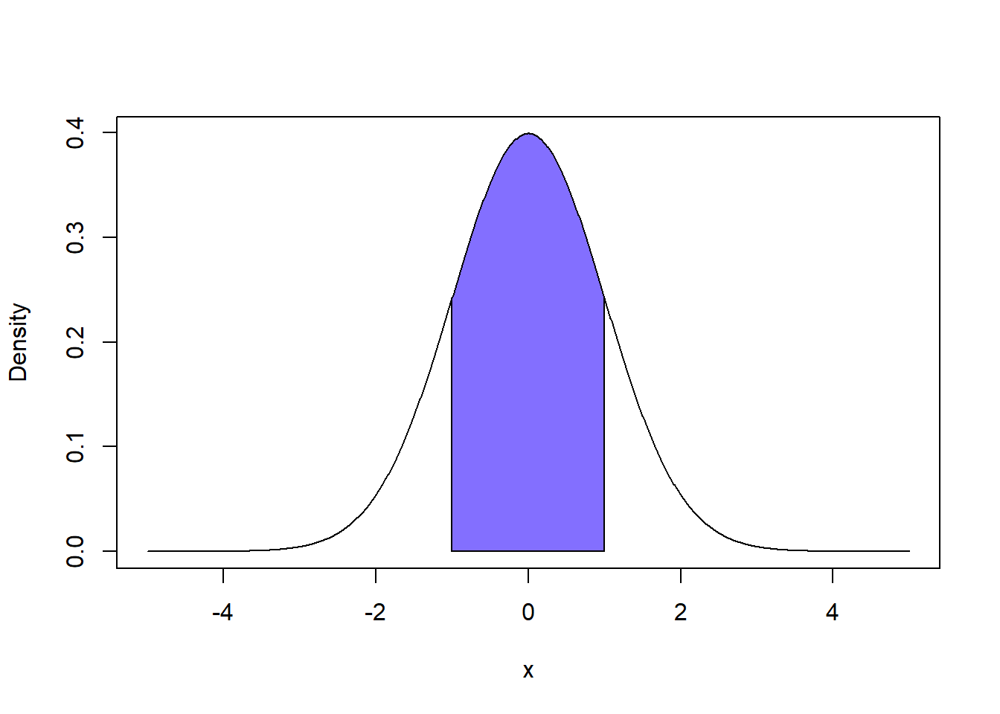
## First we take the integral of our curve using the AUC function in the MESS library
## AUC stands for "Area Under the Curve"
AUC <- MESS::auc(poly_x,poly_y)## Warning in regularize.values(x, y, ties, missing(ties)): collapsing to unique
## 'x' values## We will round the result to two decimal for ease of reading
## Taking integrals of lines is an imperfect art so R doesn't get exactly 1
round(AUC,2)## [1] 0.68When we square a value between \(-1\) and \(1\), it will result in a value between \(0\) and \(1\). Both \(-1^2\) and \(1^2\) are equal to \(1\). All values between \(-1\) and \(1\) will, when squared, result in a positive number even closer to \(0\). Thus, since the \(\chi_1^2\) distribution is just the \(Z\)-distribution squared, we can understand that ~68% of observations on a variable explained by the \(\chi_1^2\) distribution will fall between \(0\) and \(1\). We can plot this like so:
## Let's create our x-axis, 0 to 2. We will do by a tiny increment because we can't do area under the curve for infinity
x <- seq(0, 2, by = .00001)
## We will sample our chi-squared distribution
y_chi <- dchisq(x, df = 1)
## We will now plot the distribution
plot(x,y_chi, type="l", xlab = "x", ylab = "Density", ylim = c(0,5))
## we want all values of x and y where x is less than or equal to 1
## The following four lines of code do this
poly_x <- c(.00001,x[x>=.00001 & x<=1],1)
index_low <- which(x == .00001)
index_high <- which(x == 1)
poly_y <- c(0,y_chi[index_low:index_high],0)
## Then we plot it
polygon(poly_x,poly_y,col = "slateblue1")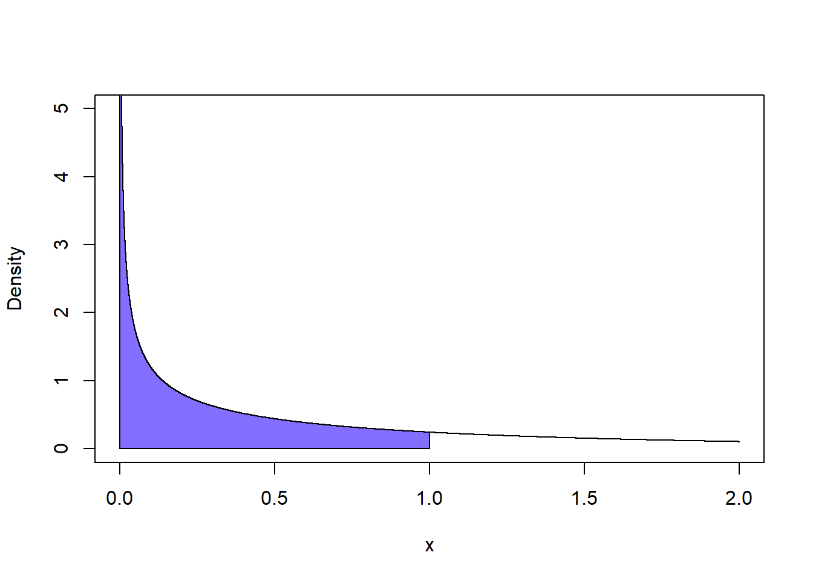
## First we take the integral of our curve using the AUC function in the MESS library
## AUC stands for "Area Under the Curve"
AUC <- MESS::auc(poly_x,poly_y)## Warning in regularize.values(x, y, ties, missing(ties)): collapsing to unique
## 'x' values## We will round the result to two decimal for ease of reading
## Taking integrals of lines is an imperfect art so R doesn't get exactly 1
round(AUC,2)## [1] 0.68As we can see, the area under the curve for the \(Z\)-distribution between -1 and 1 is the same as that for \(\chi_1^2\) between 0 and 1. We can do this for any such set of analogous intervals because of how the \(\chi_1^2\)-distribution is created by squaring the \(Z\)-distribution.
9.2.1 The \(\chi_k^2\) Distribution with \(k\) Degrees of Freedom
If we have a variable \(X\) that is assumed to follow the standard normal \(Z\)-distribution, then we can understand that \(X^2\) follows the \(\chi_1^2\) distribution. However, this is only one example of a \(\chi^2\) distribution. We can define the broader family of such distributions as follows:
Let us say we have \(k\) variables \(X_1, X_2,\dots,X_k\) that each are independent and follow the standard normal \(Z\)-distribution. Let us calculate a new variable \(Y\) by taking the sum of their squares, like so:
\[Y = \sum_{i=1}^{k}X_i^2\] \(Y\) is, then, understood to be distributed according to \(\chi_k^2\), or the \(\chi^2\) distribution with \(k\) degrees of freedom. Let’s plot several forms of \(\chi^2\) distribution with different numbers of degrees of freedom like so:
x <- seq(0, 5, by = .001)
y1 <- dchisq(x,1)
y2 <- dchisq(x,2)
y3 <- dchisq(x,3)
y4 <- dchisq(x,4)
plot(x,y1,type="l",xlab = "X", ylab = "Density", ylim = c(0,1))
lines(x,y2, col = "blue")
lines(x,y3, col = "green")
lines(x,y4, col = "red")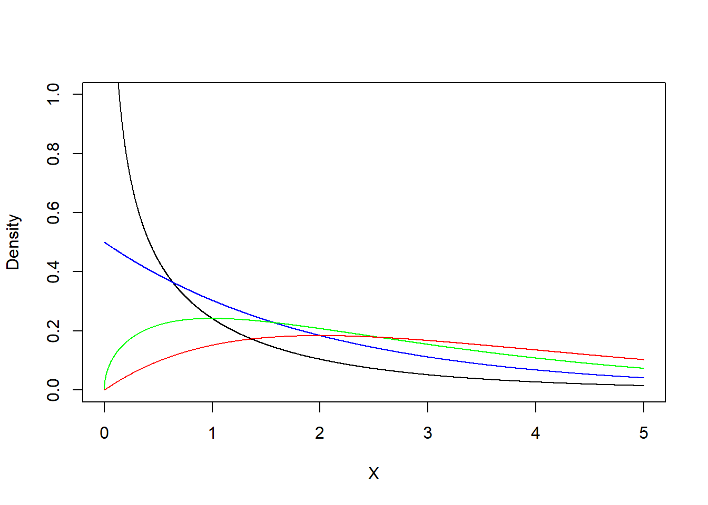
You’ll notice that as the number of degrees of freedom increases, that the shape of the curve shifts rather drastically. At an intuitive level, while we can understand that values close to 0 are more likely for one standard normal variable \(X\), the likelihood of the value of every single one of our \(k\) variables \(X_i\) being close to 0 is less likely. Additionally, the more values we sum together, the larger our resultant value will be.
The important thing to takeaway is that \(\chi_k^2\) describes the probability distribution of a variable \(Y\) defined as the sum of \(k\) independent squares. Which leads us back to our example…
9.3 The \(\chi^2\) Test of Independence
Earlier, we discussed how when we want to test if two categorical variables are related to one another, we can generate a cross-tabulation which allows us to calculate:
\[\chi^2 = \sum{ \frac{(O_{row,column} - E_{row,column})^2}{E_{row,column}}}\]
Woah! That is a sum of squares! It is generally quite easy to identify a sum of squares formula because we have a sum (\(\sum\)) of squared values (\((O_{row,column} - E_{row,column})^2\)).
Importantly, the \(\chi_k^2\) distribution describes the the sum of squares of \(k\) normally distributed variables. Well, let us consider the term \((O_{row,column} - E_{row,column})\). If our two variables are independent (in our example, if smoking and income are independent), then: the most likely value is 0 (i.e., that the observed count equals the expected count); values closer to 0 appear more likely than values closer than 0; and values less than 0 seem equally as probable as values greater than 0. At a glance, assuming the two variables are independent, it appears that these differences follow a normal distribution.
What this means is that this value we have calculated corresponds to a specific \(\chi^2\) distribution! This will allow us to test the probability of our observed data and calculate a \(p\)-value. But, before we can do so we must determine the correct number of degrees of freedom to define our \(\chi_k^2\) distribution.
As we can see in our equation, we are summing together squares for each row X column combination. That means that we are summing together \(n_{row} * n_{column}\) squares, which in the case of our example is 3*2 = 6. Instinctively, we might guess that we want to map this calculated value onto \(\chi_6^2\), or the \(\chi^2\) distribution with 6 degrees of freedom BUT, the \(\chi_k^2\) distribution is in relation to \(k\) independent normally distributed variables.
We can understand, however, that the series of differences we are summing are not totally independent. If we observe more people in one cell of our table then we can understand that this influences how many people remain to be distributed across the other cells of the table. Let us go through our example table from before to display what is meant by this. Let us begin with the cells of the table being empty, like so:
Let us start by inserting the observed number of people reporting an income of less than $20k and who report not currently smoking. Looking at our prior tables, we know that this value is 50:
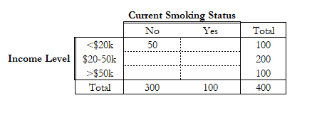
Interestingly, we will now notice that we actually have enough information in our table to identify how many people making less than $20k smoke. That’s because we know that there are 100 people making less than $20k and there only remains one more smoking category through which to distribute them. We can see that the 50 remaining people who make less than $20k must be current smokers. I shall now include this value in the table. I write it in red because we do not need to actually analyze the data to establish this value - we already have enough information (in other words, this value is not independent of our observation in the first cell):
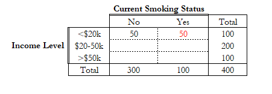
Now, we do not have enough information to automatically fill in additional cells. So, we check our data and see how many people reported an income between $20k and $50k and report not current smoking. We see that there are 160 such people in our sample, so we fill that into our table:
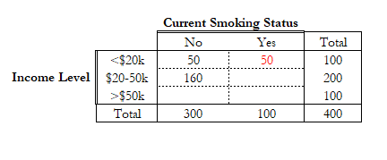
With this piece of information added to the table, we see that we can now automatically fill in the values for $20-50k current smokers (\(200 - 160 = 40\)) and for >$50k not current smokers (\(300 - (150 + 60) = 90\)), like so:
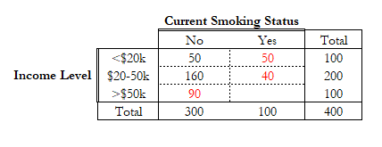
With these cells filled in, we can see that we can also fill in the value for the bottom right cell by the same process. This final cell can be calculated in many ways, but since its the finall cell we can see that we currently have allocated \(50 + 50 + 160 + 40 + 90 = 390\) participants throughout the table. Since our whole sample has \(400\) people we can see that the final cell has \(400 - 390 = 10\) participants in it, like so:
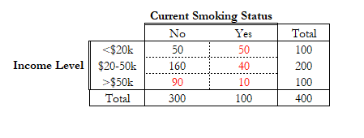
Interesting, while we have 6 cells total, we see that only 2 of the values are able to vary freely. Meaning that once we fill in 2 of our 6 cells, we know the values of the remaining 4 cells. Thus, we can see that we only have 2 degrees of freedom to measure our signal. As such, we will compare our test statistic \(\chi^2 = \sum{\frac{(O_{row,column} - E_{row,column})^2}{E_{row,column}}}\) to \(\chi_2^2\) (aka the \(\chi^2\) distribution with 2 degrees of freedom).
We can easily calculate the appropriate number of degrees of freedom by calculating \((rows - 1)*(columns - 1)\), where \(rows\) is the number of rows in our table and \(columns\) is the number of columns in our table. In this example we can see this would equal \((3 - 1)*(2 - 1) = 2*1 = 2\).
Finally, recall before we calculated our test statistic as:
\[ \begin{align} \chi^2 = & \frac{(50 - 75)^2}{75} + \frac{(50 - 25)^2}{25} + \frac{(160 - 150)^2}{150} + \frac{(40 - 50)^2}{50} + \frac{(90 - 75)^2}{75} + \frac{(10 - 25)^2}{25}\\ \chi^2 = &625/75 + 625/25 + 100/150 + 100/50 + 225/75 + 225/25\\ \chi^2 = &48 \end{align} \] So, now the final step of our test is to compare our test statistic (\(\chi^2 = 48\)) to the \(\chi^2\)-distribution with 2 degrees of freedom, or \(\chi_2^2\). Specifically, we want to know what is the probability of observing a value of 48 or a more extreme value, assuming the null hypothesis is true (that our two variables are independent). This can be depicted in probability language like so:
\[P(\chi^2 \geq 48 | \chi_2^2)\] We can make this calculation by calculating the area under the curve like so. In order to aid in the visualization of this calculation, the graph I present is very zoomed in so that we can visually see the area being drawn:
## Let's create our x-axis, 0 to 60 - we are making the scale go to 60 since our test statistic is 48
x <- seq(0, 60, by = .01)
## We will sample our chi-squared distribution
y_chi <- dchisq(x, df = 1)
## We will now plot the distribution
## We are zooming in very close to the x-axis because the height of the curve
## at chi^2 = 48 is very close to 0
## By zooming, we can see the area under the curve we are calculating the area of
plot(x,y_chi, type="l", xlab = "x", ylab = "Density", ylim = c(0,.0000000001))
## Now we will shade in the area under the curve greater than 48
poly_x <- c(48,x[x>=48],60)
index_low <- which(x == 48)
index_high <- which(x == 60)
poly_y <- c(0,y_chi[index_low:index_high],0)
## Then we plot it
polygon(poly_x,poly_y,col = "slateblue1")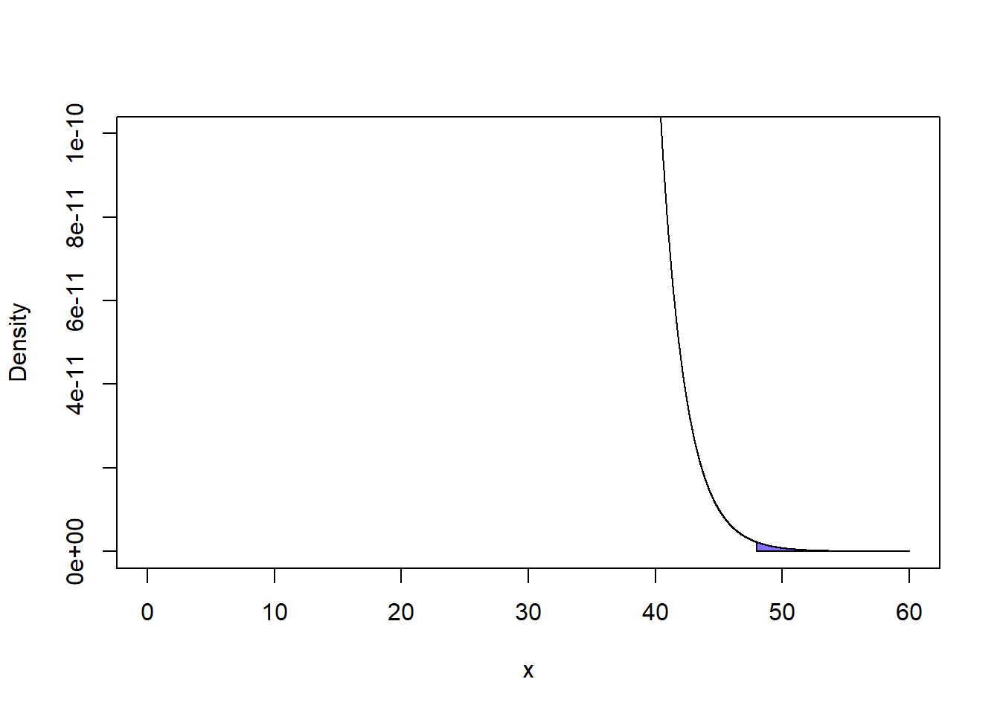
## First we take the integral of our curve using the AUC function in the MESS library
## AUC stands for "Area Under the Curve"
AUC <- MESS::auc(poly_x,poly_y)## Warning in regularize.values(x, y, ties, missing(ties)): collapsing to unique
## 'x' values## We can print out our AUC calculation - our p-value
AUC## [1] 4.247269e-12In this case we see that \(P(\chi^2 \geq 48 | \chi_2^2) \approx 4.25e(-12)\). The \(e(-12)\) tells us to place a decimal point and 12 leading zeros before the value, so \(4.25e(-12) = 0.000000000000425\). Typically, when we have a value this small, it is convential to simply write \(< 0.001\). In this case, \(P(\chi^2 \geq 48 | \chi_2^2) < 0.001\).
9.3.1 Formally Defining the Test
Generally, we can define the \(\chi^2\) Test of Independence like so. Given two categorical variables \(X\) and \(Y\), we want to assess if these two variables are related to one another. We start by assuming that they are not (i.e., we assume they are independent). Our null and alternate hypotheses can be defined like so:
- \(H_0\): \(X\) and \(Y\) are independent of one another. (Knowing the value of one variable does not help you predict the value of the other)
- \(H_A\): \(X\) and \(Y\) are dependent on one another.
We can then create a table representing the cross-tabulation of \(X\) and \(Y\) (this table is a visual aid for conducting the test). Each row of the table represents a level of \(X\) and each column of the table represents a level of \(Y\). Thus, the number of rows is equal to the number of levels of \(X\) and the number of columns is equal to the number of levels of \(Y\).
Under our null hypothesis, we assume that \(X\) and \(Y\) are not related. Under this assumption, we thus can expect values of each variable to be evenly distributed. For each combination of a level \(x\) from \(X\) and \(y\) from \(Y\), we can calculate the expected number of people reporting both \(x\) and \(y\), as follows:
\[E_{x,y} = \frac{n_x*n_y}{n}\]
Where \(n_x\) represents the total number of participants reporting level \(x\) from \(X\) and \(n_y\) represents the number reporting level \(y\) from \(Y\).
After calculating the expected values for each cell \(E_{x,y}\), we can compare them to the observed value for that combination of \(x\) and \(y\), denoted as \(O_{x,y}\). With these values established, we can now calculate our \(\chi^2\) test statistic like so:
\[\chi^2 = \sum{ \frac{(O_{x,y} - E_{x,y})^2}{E_{x,y}}}\]
Now, we want to compare our test statistic to the appropriate \(\chi_k^2\) distribution. If we let \(levels(X)\) and \(levels(Y)\) represent the number of categories each of our variables \(X\) and \(Y\) has, then we can calculate that \(k = (levels(X) - 1)*(levels(Y)-1)\). \(levels(X)\) is equivalent to the number of rows in our table (\(rows\)) and \(levels(Y)\) is equivalent to the number of columns in our table, so we can understand the \(k = (rows - 1)*(columns - 1)\).
So, the final step is to ask how probable our observed test statistic or a more extreme value under our null hypothesis. The behavior of our test statistic under the null hypothesis is assumed to follow the \(\chi_k^2\) distribution. So, this allows us to ask what the probability of observing our test statistic \(\chi^2\) or a greater value (i.e., \(\geq \chi^2\)), assuming that our test statistic is assumed to follow the \(\chi_k^2\)-distribution, or:
\[P(\geq \chi^2 | \chi_k^2)\]
This represents our \(p\)-value. A value closer to 0 indicates that our observed data is more unlikely under our null hypothesis. Assuming a standard significance brightline of \(\alpha = 0.05\), if \(p < \alpha\), we consider our result to be significant and this represents evidence that our null hypothesis may be incorrect. Under such circumstances, we may choose to reject the null hypothesis that \(X\) and \(Y\) are independent in favor of the alternative that \(X\) and \(Y\) are dependent on one another.
To summarize the steps, given two categorical variables \(X\) and \(Y\):
- First, we calculate the expected value of each combination of \(X\) and \(Y\), \(E_{x,y}\)
- Second, we calculate the observed value for each combination of \(X\) and \(Y\) in our data, \(O_{x,y}\)
- Third, we calculate our test statistic \(\chi^2 = \sum{\frac{(O_{x,y} - E_{x,y})^2}{E_{x,y}}}\)
- Fourth, we calculate the number of degrees of freedom \(k = (levels(X) - 1)*(levels(Y) - 1)\)
- Finally, we compare our test statistic to the \(\chi_k^2\)-distribution to calculate our \(p\)-value.
The table is a visual tool for conducting the test. When computing a \(\chi^2\) test by hand, the table is a useful way of conducting it.
9.3.2 What are the assumptions of the \(\chi^2\) Test of Independence
Given two variables \(X\) and \(Y\), the \(chi^2\) Test of Independence can be used to assess the relation of these variables if:
- \(X\) and \(Y\) are both categorical.
- The levels of each variable \(X\) and \(Y\) are mutually exclusive. In other words, each participant must belong to one and only one level of both \(X\) and \(Y\).
- Each observation is independent - in other words, our data comes from a random sample of independent observations.
- The value of \(E_{x,y}\) should be 5 or greater in at least 80% of table cells and \(E_{x,y}\) must be at least 1 for every cell.
When the final assumption is not met, the test statistic is not well described by the corresponding \(\chi_k^2\) distribution, leading to biased results.
Checking the assumptions can be done by 1) examining \(X\) and \(Y\) to confirm that they are categorical and that levels are mutually exclusive and 2) generating the table of expected and observed values, as was done at the beginning of this text.
9.3.3 Running the \(\chi^2\) Test in R
In order to run the rest in R, we must generate a table with our observed values. Let us use the example table above to display:
We will generate the table like so:
## First we will define each row
row1 <- c(50, 50)
row2 <- c(160, 40)
row3 <- c(90, 10)
## Next, we will use the matrix() function to create our table
## The matrix function creates an object like a data.frame, but it is a bit simpler
matrix <- matrix(c(row1,row2,row3), # First argument is a vector containing each row
ncol = 2, # Second argument is stating how many columns the table has
byrow = TRUE) # Third argument specifies we are filling table by Row
## We can then define row names and column names
rownames(matrix) <- c("<$20k","$20-50k",">$50k")
colnames(matrix) <- c("Not Current Smoker","Current Smoker")
## We can then convert our matrix into a table object, which needs to happen to run the test
table <- as.table(matrix)
## Let's peak at our table really quickly
table## Not Current Smoker Current Smoker
## <$20k 50 50
## $20-50k 160 40
## >$50k 90 10Now that we have generated our table, we can run the \(\chi^2\) test:
## Perform the test
chisq.test(table)##
## Pearson's Chi-squared test
##
## data: table
## X-squared = 48, df = 2, p-value = 3.775e-11Like in our example by hand, our test statistic is \(\chi^2 = 48\), we have 2 degrees of freedom, and our \(p\)-value is <0.001. The \(p\)-value is not identical to what we calculated prior, and this is due to differences in how area under the curve was calculated.
Often, the \(\chi^2\) test will be run “behind the scenes.” For example, the \(tableone\) package will automatically run the test when generating a table with categorical variables.
9.4 Other Variations of the \(\chi^2\) Test
In this text, we have discussed the \(\chi^2\) Test of Independence. There are two other common variations of the \(\chi^2\) test that use the same general approach: the Goodness of Fit Test; and the Homogeneity Test. Here we shall go over the Goodness of Fit test.
9.4.1 Goodness of Fit Test
The goodness of fit test when we want to assess if the distribution of a single categorical variable \(X\) matches a pre-defined distribution. For example, let’s say \(X\) is a three-category variable capturing if someone is right-handed, left-handed, or ambidextruous. Well, let us say that multiple studies have established that approximately 85% of people are right-handed, 13% are left-handed, and 2% are ambidextruous. Let us say we recruit a sample, we can ask if our sample matches this distribution.
Our statistical hypotheses are:
- \(H_0\): The distribution of \(X\) fits the predetermined distribution
- \(H_A\): The distribution of \(X\) does not fit the distribution.
We still start by calculating expected values, but now only have one variable \(X\). The expected value \(E_x\) is equal to the number of people in our sample \(n\) times the population proportion for level \(x\). So, if we have a sample of 200 people and we know that 85% of people are right-handed, then we can expect that \(E_{right-handed} = 200*0.85 = 170\).
Like with before, we calculate our \(\chi^2\) value by comparing the expected values \(E_x\) with the observed values \(O_x\):
\[\chi^2 = \sum{ \frac{(O_{x} - E_{x})^2}{E_{x}}}\]
This test statistic is understood to have \(k = levels(X) - 1\) degrees of freedom and we compare the test statistic to the \(\chi_k^2\) distribution.